services
解体・アスベスト
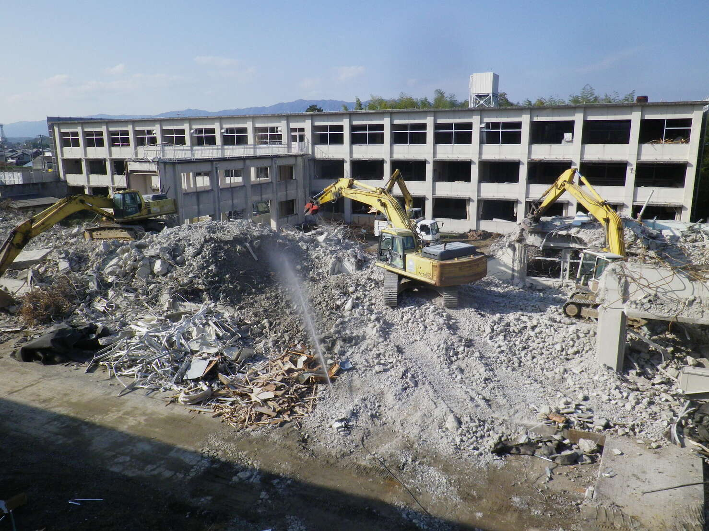
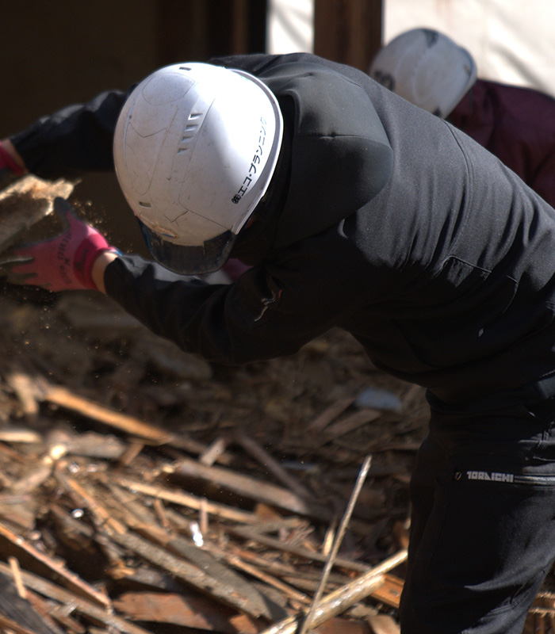
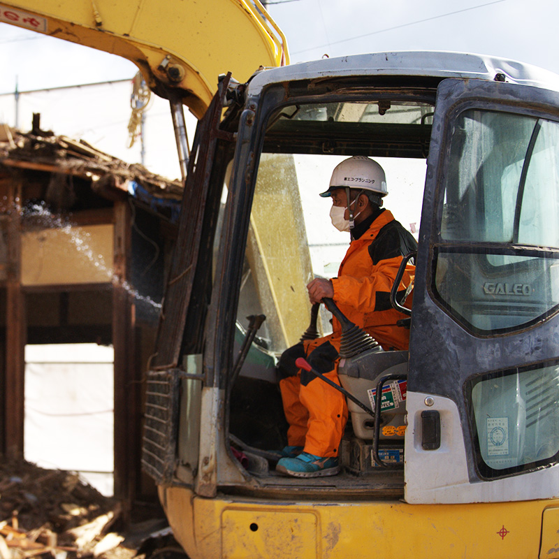
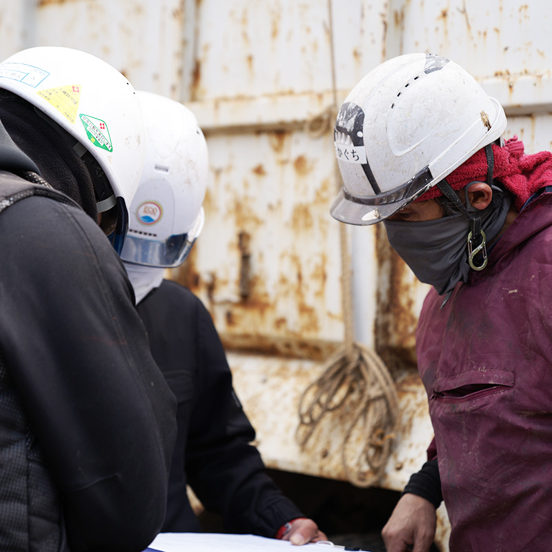
特許技術が証明する高い解体スキルと、
ワンストップ体制で実現する手続きゼロの安心感
エコ・プランニングは、40年を超える歴史の中で多種多様な解体工事を手掛けてきました。一般的な木造住宅・戸建から店舗、工場設備、橋梁まで幅広く対応し、過去にはヘリコプターを活用した高層ホテルの解体や独自の特許技術によるトンネル撤去など、高度な専門知識を要する案件も多数経験しています。弊社の最大の強みは、解体施工から廃棄物の運搬、自社中間処理場および関連会社での最終処分まで一貫して担う「ワンストップ体制」です。複雑な処理計画の策定や現地確認、マニフェスト管理といった煩雑な手続きをすべて弊社が代行するため、お客様は余計な手間をかけることなく工事の完了を迎えていただけます。電子マニフェスト・電子契約にも完全対応し、迅速かつ正確な事務処理を実現。自社施工中心の体制により現場への指示伝達もスムーズで、急な仕様変更にも柔軟かつ迅速に対応いたします。大規模ビルから小規模な家屋・付属建物まで、安心してお任せください。
解体・アスベストでお困りごとはないですか？
-
業者調整や
書類手続きが煩雑 -
アスベストの
法令対応が不安 -
不法投棄や
近隣トラブルが心配
そんなお困りごとはエコプランニングにおまかせください
通常、廃棄物の処分業者と解体工事業者は別の場合が多く、解体工事で発生した廃棄物の処理計画書や現地確認、適正処理を証明するマニフェスト管理など、手続きが非常に煩雑です。エコ・プランニングなら解体から廃棄物処理まで一括対応するため、複雑な手続きをすべてお任せいただけます。
-
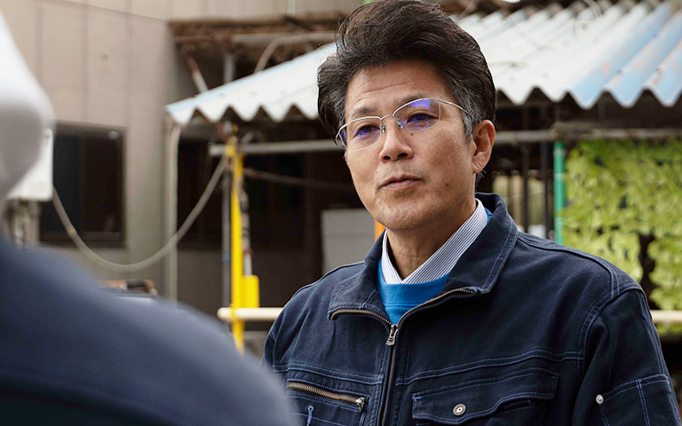
「ワンストップ体制」で
手続きの手間をゼロに解体工事の施工から発生した廃棄物の運搬、そして最終処分までを自社およびグループで一貫して対応することで、煩雑な調整作業を解消します。
-
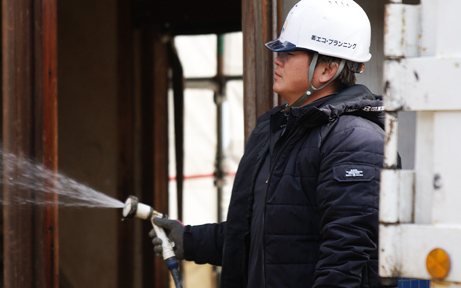
有資格者と自社職人による
「安心のアスベスト対応」初期の調査から高難度な除去作業まで、すべて自社の専門チームが責任を持って対応するため、品質と安全性を一貫して確保できます。
-
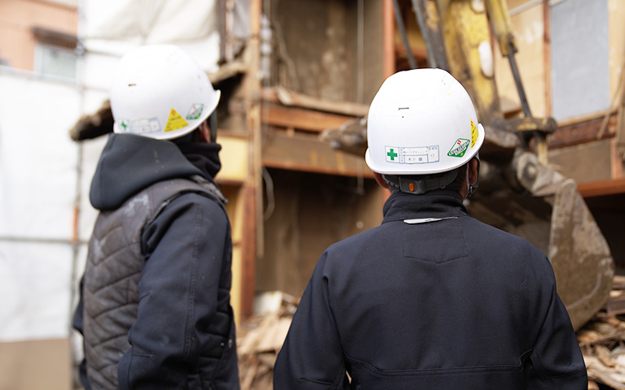
豊富な実績と徹底した
「安全・コンプライアンス管理」長年の経験に裏打ちされた技術力と社内の厳格なチェック体制により、不法投棄リスクの排除と近隣への配慮を徹底します。

個人・法人を問わずご相談を承ります。
- 「どこに、何を、
どう頼めばいいのか」
という漠然とした不安 - 「あちこち高い請求が
来るのではないか」という
費用への不安 - 「近隣住民とのトラブルに
なるのではないか」
という心配 - 「こんな小さな
（あるいは特殊な）工事
でも受けてもらえるのか」
という遠慮
創業40年超の実績と自社処分場を強みに、解体から処分まで一貫対応します。煩雑な調整を窓口一本で解消し、明確な見積もりによる透明性のある価格をご提示します。有資格者による安全なアスベスト除去や徹底した近隣配慮はもちろん、小規模から特殊な工事まで、どうぞお気軽にご相談ください。
compatible range
対応範囲
-
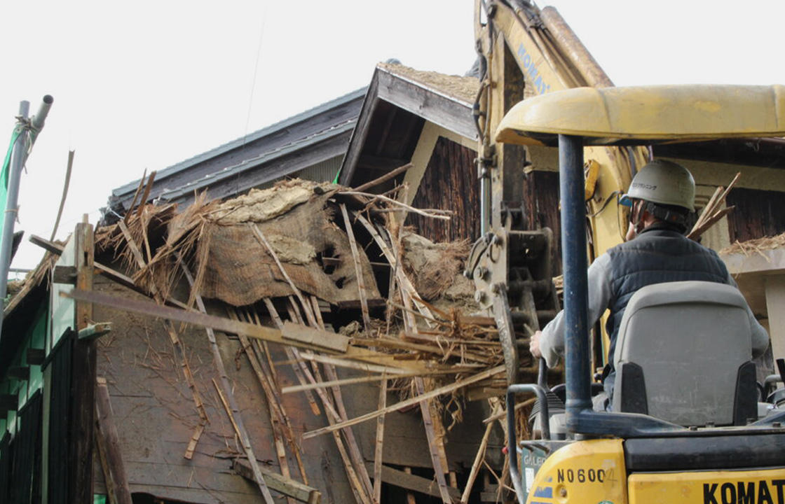
01 木造解体（住宅等）
一般的な戸建て住宅をはじめ、店舗などの木造建築物の解体に幅広く対応しています。40年超の実績に基づく確かな技術で、騒音・振動・粉塵を最小限に抑え、近隣住民への配慮を徹底。建物の全解体はもちろん、内装のみのスケルトン工事やリフォームに伴う部分解体にも柔軟に対応いたします。
-
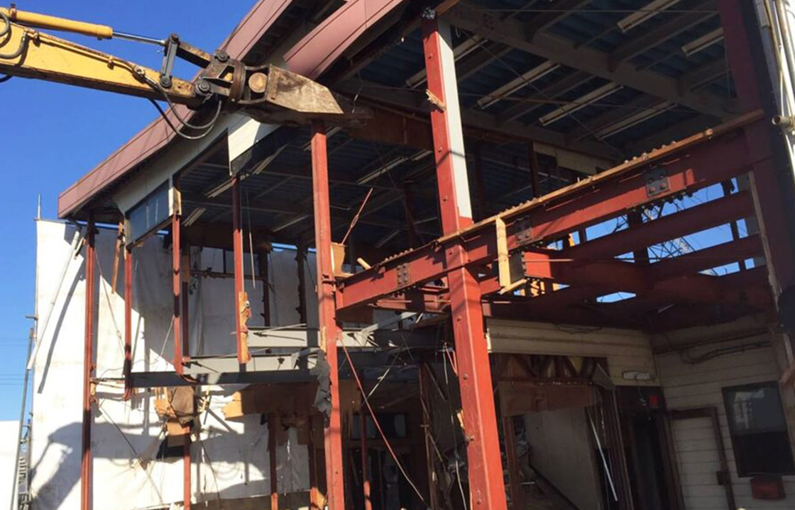
02 鉄骨解体
倉庫や工場、店舗などの鉄骨造建築物の解体にも対応しています。建物の規模や周辺環境を綿密に調査し、最適な重機と工法を選定することで、安全かつ迅速な解体を実現します。自社処分場を活かしたワンストップ体制により、解体で発生する鉄骨・廃材などの産業廃棄物も適正かつスムーズに処理いたします。
-
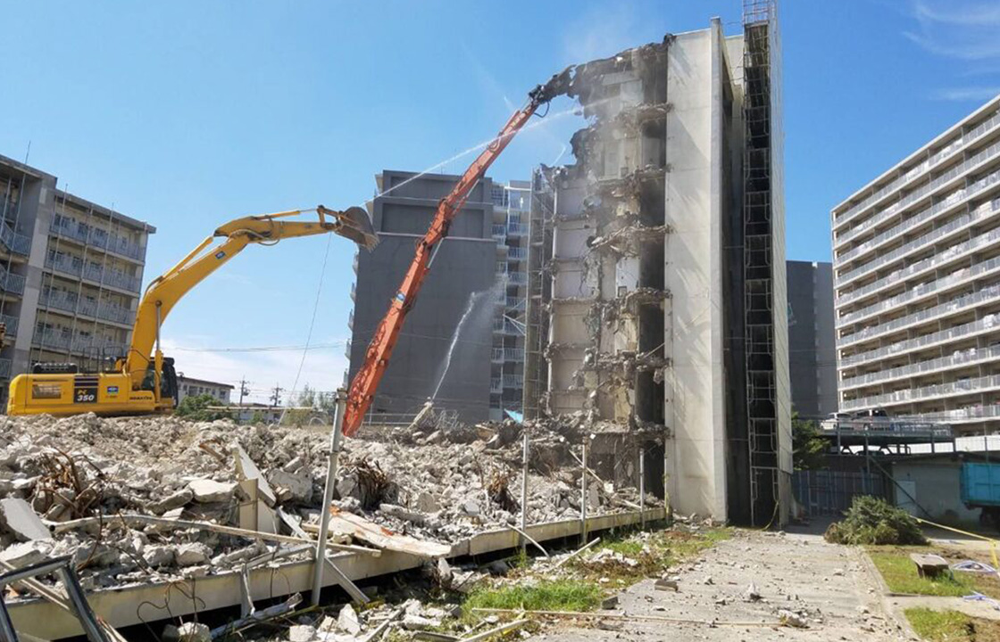
03 RC解体
堅固なマンションや大型ビルなど、RC造（鉄筋コンクリート造）の解体にも豊富な実績があります。大型重機の活用に加え、ヘリコプターを活用した高所・特殊解体や独自特許による撤去工事の経験も有しています。高度な技術力で騒音・振動への対策を徹底し、難易度の高い現場でも安全かつ確実な工事を実現します。
-
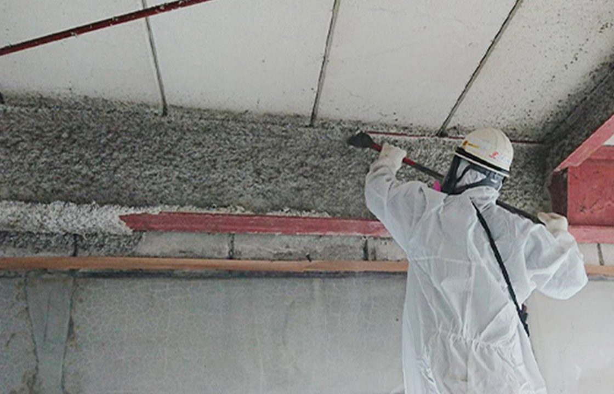
04 アスベスト除去工事
営業担当全員が「一般建築物 石綿含有建材調査者」の資格を保有しており、初期調査から正確な診断が可能です。除去作業も法を熟知した自社の熟練監督と職人がレベル1から3まですべて対応。調査から施工、最終処理まで自社で責任を持って一貫管理し、安心の環境をご提供します。
その他の解体
-
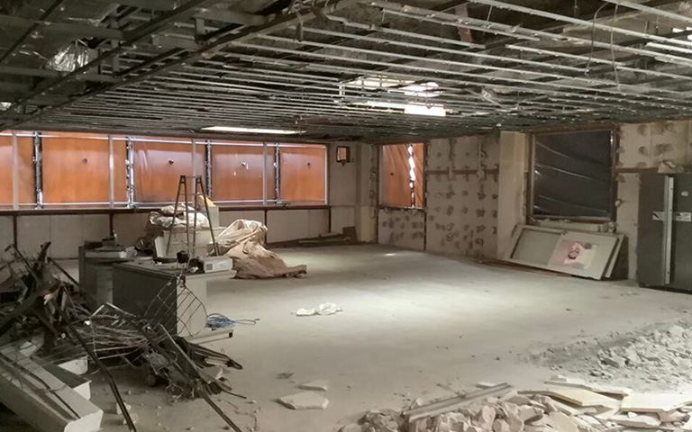
内装解体
店舗やテナントの退去時に伴う、内装のみの解体工事もエコ・プランニングにお任せください。
-
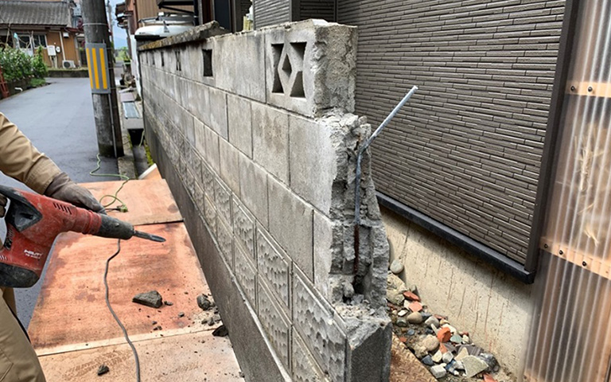
外構解体
お庭のブロック塀をはじめとした、外構・エクステリアの解体工事も承っております。
-
土木・その他付帯工事
木や樹木などの伐採・抜根をはじめ、産業廃棄物処理などの付帯工事も承っております。
price
参考価格・オプション
掲載の費用はあくまで過去施工事例に基づく参考価格になりますので、くわしい施工内容や
見積もりはお気軽にお問い合わせください
解体の基本料金
| 施工対象 | 料金表サンプル | 料金表サンプル |
|---|---|---|
| 木造（住宅など） | 9,000円〜/平米 | 9,000円〜/平米 |
| 鉄骨 | 9,000円〜/平米 | 9,000円〜/平米 |
| RC | 12,000円〜/平米 | 12,000円〜/平米 |
| 項目があれば追記します | 0,000円〜/平米 | 0,000円〜/平米 |
| 項目があれば追記します | 0,000円〜/平米 | 0,000円〜/平米 |
| 項目があれば追記します | 0,000円〜/平米 | 0,000円〜/平米 |
オプション
| オプション | 料金 |
|---|---|
| オプション項目があればここに | 0,000円/1件 |
| オプション項目があればここに | 0,000円/1件 |
| オプション項目があればここに | 0,000円/1件 |
flow
ご依頼の流れ
-
step 01
お問い合わせ
電話またはお問い合わせフォームより、
ご連絡お願いいたします。 -
step 02
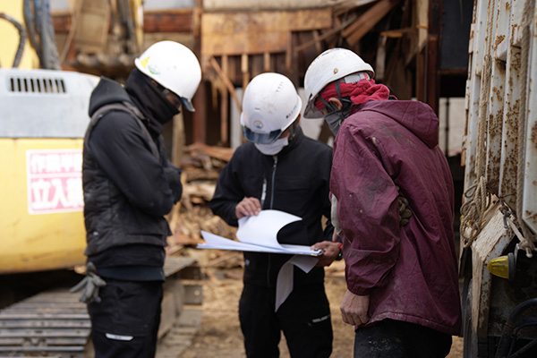
現地調査・お見積り
現地調査を行ない、詳細なお見積りを
ご提出させていただきます。 -
step 03
ご契約
施工内容やお見積り金額に疑問や
不満がなければご契約成立となります。 -
step 04
リサイクル法届出書役所申請
弊社にて各種提出書類を作成し、提出しますので、
お手を煩わせません。 -
step 05
近隣挨拶
下記はすべてダミーテキストです。
この度は、弊社をご利用いただき誠にありがとうございます。 -
step 06
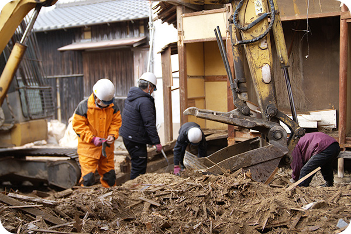
解体工事
細心の注意を払い、慎重かつ迅速に解体工事を進めさせていただきます。
-
step 07
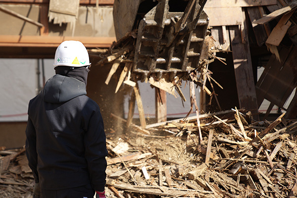
工事完了立ち合い
解体後、お客様に現場を見ていただき、OKをいただきましたら、
完了となります。 -
step 08
請求書の発行・お支払
後日、請求書を発行いたしますので、お支払いをお願いいたします。
現地調査を行ない、詳細なお見積りをご提出させていただきます。
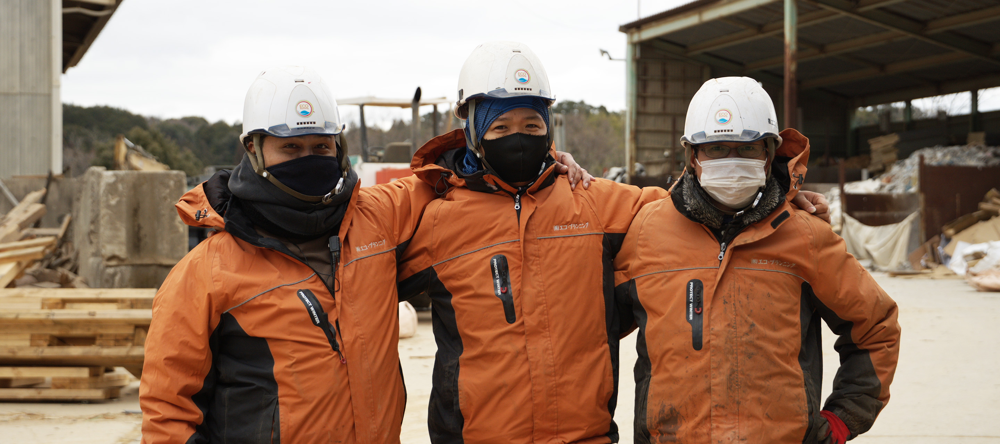
工事後もおまかせください
エコ・プランニングでは解体後の工事にも対応しております。
下記の様な工事もご要望にお応えします。お気軽にお問い合わせください。
-
駐車場を新設したい
-
外構工事をしてほしい
-
宅地造成をしてほしい
contact
お問い合わせ
解体、産業廃棄物回収・持込、
不用品回収からハウスクリーニングまで
お困りごとは何でもお気軽にご相談ください。